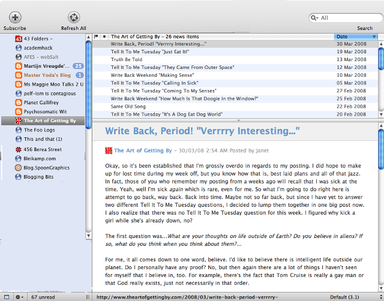

Back to Specification
3-pane View
is commonly found in desktop feedreaders/aggregators.
The panes contain feedlist, entry titles, individual entry content.
This mockup is derived from
NetNewsWire
.
